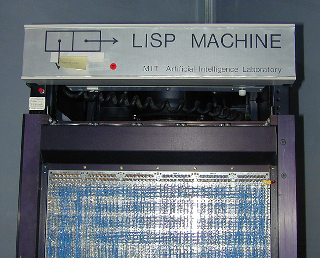

들어가며
🚧 사이트 공사중입니다.
LISP(LISt Processing)
-

REPL
REPL: 읽고(Read) 평가하고(Eval) 출력(Print)을 반복(Loop)
* (load "hello.lisp")
Ref
설치
-
SBCL을 설치하도록 합니다.
-
rlwrap (ReadLine Wrapper)
Ref
- https://lispkorea.github.io/commonlisp/setup_sbcl/
- https://lispkorea.github.io/commonlisp/setup_slt/
- https://lispcookbook.github.io/cl-cookbook/editor-support.html
SBCL
SBCL: Steel Bank Common Lisp
⚠️ 주의
설치시 폴더명에 공백 없도록.
- emacs를 사용할시 패키지에서 실행파일을 못 찾거나, 실행하지 못하는 문제가 생길 수 있음.
- 기본 설치폴더
C:\Program Files\Steel Bank Common Lisp이 아닌C:\SBCL와 같이 공백이 없도록 설치한다.
lisp파일의 라인 끝은(eol, End of Line)은 LF(line feed)로 끝나도록 한다.
- SBCL에는 윈도우의 기본 라인엔딩
CRLF(carriage return + line feed) 문제가 있다.
따라서 .editorconfig, .gitattribute 를 수정 해 강제해 주는 편이 좋다.
# file: .editorconfig
root = true
# Lisp 파일 설정
[*.lisp]
end_of_line = lf
insert_final_newline = true
charset = utf-8
# file: .gitattribute
*.lisp text eol=lf
*.asd text eol=lf
*.cl text eol=lf
아톰
- Lisp에서 모든 데이터는 콘스 셀(cons cell) 혹은 아톰(atom) 중 하나.
사전 지식
표기법(notation)
- 표기법
- 전위 표기법(prefix notation) : + 1 2
- 중위 표기법(infix notation) : 1 + 2
- 후위 표기법(postfix notation) : 1 2 +
- 자동완성
- 전위 표기법 특성 상 Method Completion / Property Completion 이 안됨
- 심볼 자동완성에 의존
code is data — Homoiconicity
참과 거짓
참 : T 거짓 : NIL
아톰이 아닌 것
- Cons Cell인 것
- Cons Cell이 결합된 리스트(list) 역시 아톰이 아니다.
- Cons Cell (콘스 셀)
- 두 개의 값을 담는 한 쌍 (first . second)
- List (리스트)
- Cons Cell을 이어 붙인 연결 구조
📋 Cons는 아톰이 아니다
(atom (cons 1 2)) ; => NIL
(atom '(1 . 2)) ; => NIL
📋 리스트는 아톰이 아니다
(atom (list 1 2 3)) ; => NIL
(atom '(1 2 3)) ; => NIL
아톰인 것
🔢 숫자는 아톰
(atom 42) ; => T
(atom -1.5) ; => T
🔤 문자열, 문자도 아톰
(atom "hello") ; => T
(atom #\A) ; => T
📌 키워드도 아톰
(atom :ok) ; => T
🧠 심볼도 아톰
(atom 'x) ; => T
(atom 'atom) ; => T
🧪 T / NIL 도 아톰이다
'()은 NIL과 동의어(synonym)
(atom T) ; => T
(atom NIL) ; => T
(atom '()) ; => T
📦 함수 객체도 아톰이다
(atom #'helloworld) ; => T
짚고 넘어가기
atom
https://lispkorea.github.io/successful-lisp-kr/ch03/lesson_01.html
Cons
s-expression
cons cell
car cdr
cons가 아닌 것은 아톰
(atom (cons 1 2))
;;=> NIL
(consp '())
;;=> NIL
(consp '(1))
;;=> T
(consp '(1 . 2))
;;=> T
(consp '(1 2))
;;=> T
(type-of '())
;;=> NULL
(typep '() 'atom)
;;=> T
(type-of '(1))
;;=> CONS
(typep '() 'cons)
;;=> NIL
(typep '() 'list)
;;=> T
(typep '(1) 'cons)
;;=> T
(typep '(1) 'list)
;;=> T
(typep '(1 . 2) 'cons)
;;=> T
(typep '(1 . 2) 'list)
;;=> T
car,cdr는first,rest보다 가독성이 떨어지니, 아이템이 2개 있는 Cons Cell을 제외하고는 사용을 안하는게 하는게 좋음.
짚고 넘어가기
consconspcar/cdrfirst/second/third/fourth/fifth/sixth/seventh/eighth/ninth/tenthrest
https://lispkorea.github.io/successful-lisp-kr/ch03/lesson_04.html
표현식
(+ 1 1)
;; => 2
(+ 1 1)라는 평가(eval)할 수 있는 표현식(expression)이 있고, 리스프에서는 이를S-expression이라 합니다.S-Expression은Symbolic-Expression의약자로, 더 줄여서sexpr라 쓰기도 합니다.
sexpr은 Atom | Expression으로 되어있으며, 각각은 다음과 같습니다.
Atom : 숫자 | 심볼.
여기서 심볼은 변수이름이나 데이터로 사용되는 문자집합.
Expression
(x . y)와 같은 형태(form)를 띈 표현식. (여기서 x, y는 s-exression)
(x y z) => (x . (y . (z . nil))
=> (심볼 . (심볼 . (심볼 . 심볼))
=> (Atom . (Atom . (Atom . Atom)
=> Expression (Expression (Expression))
=> Expression
(+ 1 1) => (+ . (1 . (1 . nil))
=> (심볼 . (숫자 . (숫자 . 심볼))
=> (Atom . (Atom . (Atom . Atom)
=> Expression (Expression (Expression))
=> Expression
이제 (eval '(+ 1 1))와 같이 eval로 (+ 1 1)이라는 표현식을 평가시키면 2라는 숫자를 얻게됩니다.
https://www.cliki.net/infix
AST(Abstract Syntax Tree) 수학표기
M-Expression (Meta-Expressions) Lets LISP like it's 1959
https://en.wikipedia.org/wiki/M-expression http://xahlee.info/comp/lisp_sans_sexp.html
심볼
(defparameter x 42) (symbol-value 'x) ; => 42 (symbol-name 'x) ; => "X" (symbol-package 'x) ; => #<PACKAGE "COMMON-LISP-USER">
(intern "AAAA") ; => AAAA (intern "aaa") ; => |aaa|
할당 assign (let* ) let flet labels
https://lispkorea.github.io/successful-lisp-kr/ch03/lesson_05.html
주석
한 줄 주석
한 줄 주석은 세미콜론( ; )으로 시작합니다
예)
| 세미콜론 갯수 | 쓰임세 |
|---|---|
| 4개 | 파일 단위로는 |
| 3개 | 구획(section) 설명으로는 |
| 2개 | 정의(definition) 안에서는 |
| 1개 | 한개의 라인에 대해서 |
;;;; hello.lisp
;;; Welcome
;;; Lisp World
(defun hello (a b)
;; a와 b를 더하고
(+ a b)) ; 반환
여러 줄 주석
- 여러줄 주석
#|으로 시작해서|#로 끝납니다. - 코딩 스타일로
#| |#로 감싸는 여러 줄 주석보다는 세미콜론;로 처리하는 주석을 더 선호하기도 함.
#|
여러 줄 주석
#|
이런것 도 가능
|#
|#
함수
scope - lexical / dynamic
함수 정의
defun
closure
counter
(documentation 'hello 'function) (documentation (function hello) 'function) (documentation #'hello 'function) (funcall 'hello "hi") (inspect 'hello)
let/let* flet/labels
(values 1 2) multiple-value-bind multiple-value-list values-list
https://lispkorea.github.io/successful-lisp-kr/ch03/lesson_07.html
재귀
values
function.md
https://lispkorea.github.io/successful-lisp-kr/ch03/lesson_09.html
return
람다
조건문
flow
https://github.com/Shinmera/for/ https://iterate.common-lisp.dev/ https://github.com/yitzchak/trivial-do/
비교
Ref
- https://eli.thegreenplace.net/2004/08/08/equality-in-lisp
- https://www.nhplace.com/kent/PS/EQUAL.html
짚고 넘어가기
=eqeqlequalequalp
데이터 타입
1 1.1 1234567890123456789012345678901234567890123456789012345678901234567890 #C(1.2 3) ; 1.2 + 3i
| type-of | |
|---|---|
| cons | |
| null | |
| symbol | |
| condition | |
| function | |
| sequence | |
| array | |
| vector | |
| bit-vector | |
| hash-table | |
| stream | |
| integer | |
| float | |
| number | |
| short-float | |
| single-float | |
| double-float | |
| long-float | |
| complex | |
| ratio | |
| rational | |
| string | |
| character | |
| random-state | |
| package | |
| pathname | |
| readtable | |
| restart |
array atom bignum bit bit-vector chracter [common] compiled-function complex cons double-float fixnum float function hash-table integer keyword list long-float nil null number package pathname random-state ratio rational readtable sequence short-float signed-byte simple-array simple-bit-vector simple-string simple-vector single-float standard-char stream string [string-char] symbol t unsigned-byte vector
typep subtypep type-of
| make-random-state | |
|---|---|
| random-state | random-state 복사 |
| nil (기본값) | 현재 random-state 복사 |
| t | 새로운 random-state |
| Common Lisp | |
|---|---|
| (logand a b c) | a & b & c |
| (logior a b c) | a | b | c |
| (lognot a) | ~a |
| (logxor a b c) | a ^ b ^ c |
| (ash a 3) | a << 3 |
| (ash a -3) | a >> 3 |
log: bit-wise logical operations
ash: arithmetic shift operation
https://www.lispworks.com/documentation/lw70/CLHS/Body/f_logand.htm
숫자
Integers Ratios 분수 Floating-Point Numbers Complex Numbers
integer fixnum bignum ratio ratio, rational, real, number, t
float #C(a b) #\char
most-positive- most-negative- fixnum / short-float / single-float / long-float
| 진법 | ||
|---|---|---|
| 2진법 | #b | binary |
| 8진법 | #o | octal |
| 16진법 | #x | hexadecimal |
| N진법 | #Nr | 여기서 N은 임의의 수 |
| 부동 소수점 | |
|---|---|
| s | short-float |
| f | single-float |
| d | double-float |
| l | long-float |
복소수
a + bi == (complex a b) == #C(a b)
(type-of #C(1 2))
;;=> (COMPLEX (INTEGER 1 2))
(typep #C(1 2) 'complex)
;;=> T
(complex 1 2)
;;=> #C(1 2)
(* #C(1 2) #C(1 2))
;;=> #C(-3 4)
(complexp #C(1 2))
;;=> T
1+ 1- incf decf min max minusp / zerop / plusp evenp / oddp
LOG EXP EXPT SIN/COS/TAN ASIN/ACOS/ATAN 쌍곡선 함수: SINH, COSH, 및 TANH ASINH, ACOSH, 및 ATANH.
FLOOR CEILING TRUNCATE ROUND MOD REM
isqrt, which returns the greatest integer less than or equal to the exact positive square root of natural.
gcd Greatest Common Denominator
lcm Least Common Multiple.
Ref
- The Common Lisp Cookbook – Numbers
- Common Lisp the Language, 2nd Edition - 2.1. Numbers
- Practical Common Lisp - 10. Numbers, Characters, and Strings
불리언
문자
CHAR= 대소문자 구분 CHAR-EQUAL 대소문자 구분 x
| Numeric Analog | Case-Sensitive | Case-Insensitive |
|---|---|---|
| = | CHAR= | CHAR-EQUAL |
| /= | CHAR/= | CHAR-NOT-EQUAL |
| < | CHAR< | CHAR-LESSP |
| > | CHAR> | CHAR-GREATERP |
| <= | CHAR<= | CHAR-NOT-GREATERP |
| >= | CHAR>= | CHAR-NOT-LESSP |
Ref
문자열
| Numeric Analog | Case-Sensitive | Case-Insensitive |
|---|---|---|
| = | STRING= | STRING-EQUAL |
| /= | STRING/= | STRING-NOT-EQUAL |
| < | STRING< | STRING-LESSP |
| > | STRING> | STRING-GREATERP |
| <= | STRING<= | STRING-NOT-GREATERP |
| >= | STRING>= | STRING-NOT-LESSP |
:start1 :end1 :start2 :end2
(string= "foobarbaz" "quuxbarfoo" :start1 3 :end1 6 :start2 4 :end2 7)
interpolation
- CL-INTERPOL
- String interpolation for Common Lisp
format
- https://lispcookbook.github.io/cl-cookbook/strings.html#string-formatting-format
- https://gigamonkeys.com/book/a-few-format-recipes
Ref
배열
(defparameter *array* (make-array '(2 4) :initial-element 0))
;;=> *ARRAY*
*array*
;; => #2A((0 0 0 0) (0 0 0 0))
(aref *array* 0 0)
;; => 0
(setf (aref *array* 0 0) 100)
;; => 100
*array*
;; => #2A((100 0 0 0) (0 0 0 0))
(setf (aref *array* 1 1) 100)
;; => 100
*array*
;; => #2A((100 0 0 0) (0 100 0 0))
벡터
해시테이블
구조체
(defstruct Hello
a
b)
(make-Hello :a 1 :b 2)
;; :conc-name
짚고 넘어가기
defstructmake-Blabla
map
(setq a '(1 2 3 4 5 6))
;;=> (1 2 3 4 5 6)
(dotimes (i 7)
(let ((*print-length* i))
(format t "~&~D -- ~S~%" i a)))
;;>> 0 -- (...)
;;>> 1 -- (1 ...)
;;>> 2 -- (1 2 ...)
;;>> 3 -- (1 2 3 ...)
;;>> 4 -- (1 2 3 4 ...)
;;>> 5 -- (1 2 3 4 5 ...)
;;>> 6 -- (1 2 3 4 5 6)
;;=> NIL
파일 입출력
바인드
https://lispkorea.github.io/successful-lisp-kr/ch03/lesson_06.html
패키지
| 항목 | Quicklisp | Ultralisp |
|---|---|---|
| URL | https://www.quicklisp.org | https://ultralisp.org |
| 주 목적 | 안정적인 패키지 배포 | 빠른 릴리스/CI 기반 배포 |
| 릴리스 주기 | 한 달에 한 번 수동 릴리스 | 자동화된 CI 시스템으로 몇 시간마다 |
;; ultralisp install
(ql-dist:install-dist "http://dist.ultralisp.org/" :prompt nil)
Ref
타입 part2
에러
error warn 'simple-error (signal (make-condition 'error) ) (define-condition my-condition (simple-condition) // 사용자 에러 정의 )
// sb-xc (ignore-errors (error "wtf")) (unwind-protect (error "wtf") )
(invoke-debugger (trivial-backtrace:print-backtrace https://github.com/hraban/trivial-backtrace Portable simple API to work with backtraces in Common Lisp
handle-case https://www.cs.cmu.edu/Groups/AI/html/cltl/clm/node346.html https://lisp-docs.github.io/cl-language-reference/chap-9/j-b-condition-system-concepts
https://cl-community-spec.github.io/pages/handler_002dbind.html
매크로
| ` | Backquote |
| , | Comma |
| ,@ | Comma-splice |
| ', | Quote-comma |
quote defmacro
매크로 확장 M-x slime-macroexpand-all (C-c M-m)
매크로를 수정하게 되면 매크로를 쓴 함수 역시 다시 평가해야 하는데 M-x slime-who-macroexpands 로 찾고 C-c C-k로 컴파일
&body (gensym) variable capture
- compile function
- read time - reader macros
- macro expansion time - macros
- compilation time
- run time - function
alexandria:with-gensyms https://alexandria.common-lisp.dev/ https://gitlab.common-lisp.net/alexandria/alexandria
================================================================================================================================================ define-symbol-macro symbol-macrolet
sharpsign(#) - https://www.lispworks.com/documentation/HyperSpec/Body/02_dh.htm
#. read-time evaluation
(defun func1 () :my-func1)
(defun #.(func1) () :kkk)
;;> (:func1) ;;=> :FUNC10 ;;> (:my-func1) ;;=> :KKK
(asdf:defsystem "mysystem" :decription "short description" :long-description #.(uiop:read-file-string (subpathname load-pathname "README.md")))
-
sly-macrostep
-
https://lispkorea.github.io/successful-lisp-kr/ch03/lesson_03.html
-
https://lispkorea.github.io/successful-lisp-kr/ch03/lesson_08.html
-
gensym -
quote
gensym
디버그
(declaim (optimize (debug 3) (speed 0) (safety 3)))
(declare (ignore arg))
Ref
- https://malisper.me/category/debugging-common-lisp/
- Debugging Lisp: fix and resume a program from any point in the stack - how Common Lisp stands out.
- https://cl-community-spec.github.io/pages/invoke_002ddebugger.html
ASDF
| 버전 | |
|---|---|
| 3 | released May 15th 2013. UIOP is part of ASDF 3 |
| 2 | François-René Rideau's ASDF 2 (released May 31st 2010). |
| 1 | Daniel Barlow's ASDF (created on August 1st 2001) |
- ASDF
AnotherSystemDefinitionFacility
- .asd 파일
- lisp 프로젝트 관리 파일
ASDFsystemdefinition
| 경로 | 설명 |
|---|---|
| ~/common-lisp/ | Common Lisp 소프트웨어 설치 기본 위치(권장) |
| ~/.local/share/common-lisp/source/ |
- 크게 다음 2파트로 나뉩니다.
asdf/defsystem: 패키지정의uiop: 유틸리티
;; file: helloworld/helloworld.asdf
(asdf:defsystem "helloworld"
:build-operation program-op
:build-pathname "helloworld"
:entry-point "helloworld::main"
:depends-on ()
:components
((:static-file "README.md")
(:module "src"
:depends-on ()
:components
((:file "package")
(:file "hello" :depends-on ("package"))))))
;; file: helloworld/src/package.lisp
(defpackage :helloworld
(:use :common-lisp))
(in-package :helloworld)
;; file: helloworld/src/hello.lisp
(in-package :helloworld)
(defun -main (args)
(princ args))
(defun main ()
(-main (uiop:command-line-arguments)))
.asd
시스템이 있고 그 다음 패키지
- #P"..." : Common Lisp에서 pathname 리터럴을 의미합니다.
- 예: #P"/home/user/code" → (make-pathname :directory '(:absolute "home" "user" "code"))
- 해당 경로가 실제 존재하는지는 확인하지 않음
- truename : Pathname 리턴
- (truename "D:/@lisp/my-lisp-systems") ;; => #P"D:/@lisp/my-lisp-systems/"
- 경로가 존재하지 않으면 에러
(require 'asdf) ; => ("ASDF" "asdf" "UIOP" "uiop")
;;; 버전 확인
(asdf:asdf-version) ; => "3.3.1"
;;; 시스템 폴더를 센트럴 레지스트리에 추가
(pushnew (truename "D:/@lisp/my-lisp-systems/helloworld") asdf:*central-registry*)
;;; 시스템 로드. helloworld.asd 파일을 읽어들임
(asdf:load-system :helloworld)
;;; 시스템 로드 ( 강제 )
(asdf:load-system :helloworld :force t)
(asdf:make :helloworld)
(asdf:load-system :helloworld)
(asdf:compile-system :helloworld)
.fasl - Fast Loading (or Loadable) file
(asdf:operate 'asdf:compile-bundle-op :helloworld :verbose t)
| program-op | (create a standalone application, which we will see below), etc. |
| compile-bundle-op | (create a single fasl for the entire system, for delivery), |
| monolithic-compile-bundle-op | (create a single fasl for the entire system and all its transitive dependencies, for delivery), |
| compile-op | (ensure the system is compiled, without necessarily loading all of it, or any bit of it), |
| image-op | (create a development image with this system already loaded, for fast startup), |
| load-source-op | (load the system from source without compiling), |
compile-bundle-op필요한 각 시스템에 대해 하나의 FASL 파일을 생성하고, 여러 FASL을 하나로 묶어 각 시스템을 하나의 FASL로 제공할 수 있습니다. monolithic-compile-bundle-op대상 시스템과 모든 종속성에 대해 하나의 FASL 파일을 생성하여 전체 애플리케이션을 하나의 FASL로 제공할 수 있습니다
(defsystem :mysystem :class :precompiled-system :fasl (some expression that will evaluate to a pathname))
;; asdf:operate == asdf:oos ( operate-on-system )
(asdf/output-translations:output-translations) asdf/output-translations:output-translations https://github.com/fare/asdf/blob/master/output-translations.lisp
https://www.sbcl.org/manual/asdf.html#Configuring-ASDF-to-find-your-systems
asdf/defsystem
- https://asdf.common-lisp.dev/asdf.html
- https://www.sbcl.org/manual/asdf.html
- https://qiita.com/MYAO/items/874aafcc531862c5f7c7
- https://github.com/fare/asdf/blob/master/doc/best_practices.md
uiop
UIOP(Utilities for Implementation and OS-Portability)
- https://asdf.common-lisp.dev/uiop.html
- https://quickdocs.org/uiop
- https://zenn.dev/hyotang666/articles/3f7abcec6f8270
;; example
(require 'asdf) ; => ("ASDF" "asdf" "UIOP" "uiop")
(uiop:command-line-arguments) ; 커맨드라인 인자
(uiop:getenv "USER")
(uiop:run-program "firefox") ; 동기
(uiop:launch-program "firefox") ; 비동기
(uiop:run-program (list "git" "--help") :output t)
(uiop:run-program "htop" :output :interactive :input :interactive)
;;; pipe: ls | sort
(uiop:run-program "sort"
:input
(uiop:process-info-output
(uiop:launch-program "ls"
:output :stream))
:output :string)
(uiop:with-temporary-file (:stream s :pathname p :keep t)
(format t "path is ~a~%" p)
(format s "hello, temporary file!"))
(uiop:quit 0)
Ref
- https://asdf.common-lisp.dev/asdf.html
- https://asdf.common-lisp.dev/uiop.html
- https://asdf.common-lisp.dev/uiop.html#UIOP_002fOS
- https://asdf.common-lisp.dev/uiop.html#UIOP_002fFILESYSTEM
- https://asdf.common-lisp.dev/uiop.html#UIOP_002fUTILITY
- https://asdf.common-lisp.dev/uiop.html#UIOP_002fPACKAGE
- https://asdf.common-lisp.dev/asdf.html#Defining-systems-with-defsystem
FFI(Foreign Function Interface)
ABI(Application Binary Interface)
C ABI C언어의 ABI
FFI(Foreign Function Interface)
2. FFI는 ABI 호환을 맞춰주는 "인터페이스" 역할
libclang: Clang의 내부 AST(Abstract Syntax Tree)을 외부에서 분석할 수 있게 해주는 C API 라이브러리
- cffi
- cl-autowrap
Test
https://github.com/fukamachi/rove https://github.com/lmj/1am https://github.com/lispci/fiveam
https://lispcookbook.github.io/cl-cookbook/testing.html https://sabracrolleton.github.io/testing-framework
https://github.com/OdonataResearchLLC/lisp-unit https://github.com/OdonataResearchLLC/lisp-unit/wiki
https://github.com/g000001/lisp-critic
Regular Expressions
- CL-PPCRE(Portable Perl-compatible regular expressions)
network
CLOS
Common Lisp Object System
defpackage :hello :use :common-lisp :documentation in-package :hello
(defclass Hello () (name age) ) 에서 C-c C-y하면 (make-instance 'Hello ) 가 입력됨
(setf hello (make-instance 'Hello)) (setf (slot-value hello 'name) "my name") :initform :initarg :reader / :writer / :accesor :documentation :allocation - :class / :instance
(defclass Hello () ((name :documentation "Name" :initarg :name :accessor name))) ;; C-c C-y
(defmethod hi ((o Hello)) (format t "Hello ~a!" (name o)))
(defparameter a (make-instance 'Hello :name "my Name"))
call-next-method // super
(typep a 'BaseA) ;; => T // a is BaseA subtypep ✔️ 타입 vs 타입 비교 // typeof(Derived).IsSubclassOf(typeof(Base)) find-class 클래스 심볼로 클래스 객체를 찾아줌 // typeof class-of 객체가 정확히 어떤 클래스의 인스턴스인지 알려줌 // .GetType()
:before / :after / :around
(defmethod print-object ((o Hello) stream) ) (print-unreadable-object (defmethod INITIALIZE-INSTANCE
다중상속 가능
(defgeneric greet (obj) (:documentation "asdf") (:method ((p person)) ) (:method ((o X)) )) https://github.com/pcostanza/closer-mop
M-x slime-unintern-symbol (fmakunbound 'greet)
MOP
Metaobject Protocol
Ref
- https://lispcookbook.github.io/cl-cookbook/clos.html
- https://cl-community-spec.github.io/pages/defclass.html
- https://cl-community-spec.github.io/pages/print_002dobject.html
- https://cl-community-spec.github.io/pages/Initialize_002dInstance.html
- https://cl-community-spec.github.io/pages/Inheritance.html
- https://cl-community-spec.github.io/pages/defgeneric.html
짚고 넘어가기
defclassdefmethod
리더매크로
https://github.com/melisgl/named-readtables
https://lispkorea.github.io/successful-lisp-kr/ch03/lesson_12.html
심볼매크로
Loop
dotimes // for
dolist // foreach
(loop :for x :in '(1 2 3) :collect (* x 10))
for:
iter:
- iterate
- reiterate
Ref
Format
자투리
우주로
DS1(Deep Space 1호) 이온 추진을 사용한 최초의 NASA 우주선. DS1 우주선이 우주속에서 교착 상태에 빠져서 고장이 남.
이온 엔진
- 60 million miles는 (96,560,400 km) 지구에서 태양 거리의 65%쯤 되는 거리(지구에서 달 거리의 250배쯤 된다)
- 빛의 속도(= 299,792 km/s (약 30만 km/s))로도 5분 22초(총 322초)걸림.
Repl을 연결해서 덤프를 긁어옴, 문제를 해결할 이벤트 찾아서, 다시 DS1에 쏴서 교착상태를 품
게임속으로
Uncharted로 유명한 Naughtydog에서 게임 스크립트 언어로 사용한 Lisp
-
Racket
-
Ref
- https://news.ycombinator.com/item?id=29987501
- GDC 2008 Adventures in Data Compilation and Scripting for UNCHARTED: DRAKE'S FORTUNE
- GDC 2009 State-Based Scripting in Uncharted 2: Among Thieves
- slide
- Jason Q. Gregory
- RacketCon 2013: Dan Liebgold - Racket on the Playstation 3? It's Not What you Think!
- Dan Liebgold
- GDC 2014 A Context-Aware Character Dialog System
- slide
- Jason Gregory
- HandmadeCon 2016 - Large-scale Systems Architecture
- Jason Gregory
Quicklisp
;; REF: https://www.darkchestnut.com/2016/quicklisp-load-personal-projects-from-arbitrary-locations/
(pushnew (truename "/projects/app/") ql:*local-project-directories* )
(ql:register-local-projects)
(ql:quickload :app)
deploy - https://github.com/Shinmera/deploy commandline parser clingon - https://github.com/dnaeon/clingon cl21 - https://github.com/cl21/cl21 - https://lispcookbook.github.io/cl-cookbook/cl21.html
커먼리스프 역사
Lisp 1 vs Lisp 2
| 네임스페이스 | 언어 | |
|---|---|---|
| Lisp2 | 함수와 변수 분리 | Common Lisp |
| Lisp1 | 하나로 | Clojure / Scheme |
https://www.nhplace.com/kent/Papers/Technical-Issues.html
배포판(implementation)
- SBCL(Steel Bank Common Lisp)
- ECL(Embeddable Common Lisp)
- ABCL(Armed Bear Common Lisp)
- CCL(Clozure Common Lisp)
- CLISP
- CLASP
- Bringing Common Lisp and C++ Together
- Allegro Common Lisp by fanz
- Lispworks
Ref
인물들
John McCarthy
- Lisp의 아버지 "존 매카시” (1927년 9월 4일 ~ 2011년 10월 24일)
| 1956년 | 다트머스 학회에서 처음으로 인공지능(Artificial Intelligence)이라는 용어를 창안 |
| 1958년 | Lisp 개발시작 |
| 1960년 | 논문 "Recursive Functions of Symbolic Expressions and Their Computation by Machine, Part I" |
| 1971년 | 튜링상 수상. 인공지능에 대한 연구업적 인정 |
Lisp 만들기
- Build Your Own Lisp
- src
- C 언어로 구현. 매크로 구현 없음
- kanaka/mal
- https://github.com/kanaka/mal/blob/master/process/guide.md
- 가이드 문서 한장으로 테스트 풀어나가는 형식. 매크로 구현 있음
- 여러 언어로 구현된 소스들이 있음.
- building-lisp
- src
- C 언어
- microsoft/schemy
- A lightweight embeddable Scheme-like interpreter for configuration
- C#언어
- https://bernsteinbear.com/blog/lisp/
- C 언어
- SICP (Structure and Interpretation of Computer Programs)
- by Harold Abelson and Gerald Jay Sussman with Julie Sussman
- 번역서) 컴퓨터 프로그램의 구조와 해석
- 번역) 김재우,안윤호,김수정,김정민, 감수) 이광근
- https://github.com/lisp-korea/sicp
- https://github.com/lisp-korea/sicp2014
참고자료
문서
- CLiki - the common lisp wiki
- CL Cookbook
- Common Lisp Docs
- https://github.com/CodyReichert/awesome-cl
- https://common-lisp-libraries.readthedocs.io/
Cheatsheet
사전
- NovaSpec
- HyperSpec
- CL CommunitySpec (CLCS)
- ANSI Common Lisp specification draft
- Common Lisp Quick Reference
- https://quickdocs.org/